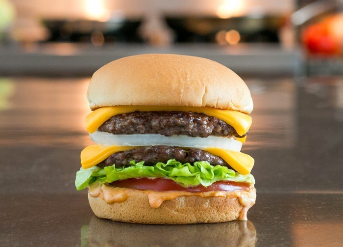

Double Cheeseburger

Double cheeseburger with tomato, lettuce, and onion
Great recipe for a double cheeseburger. Made similar to
the extremely popular In-n-Out #1, Double Double with
raw onions (fries and drink not included).
People that didn't grow up in California just won't get it ;)
Ingredients
- 1 Hamburger Bun
- 1/3 lb Ground Beef
- 1 Pinch Salt
- 2 Cheddar or American Cheese Singles
- 1 tbsp Thousand Island Dressing
- 1 Slice Tomato
- 1 Leaf Lettuce
- 1 Slice Onion
Steps
- Preheat a skillet over medium heat. Lightly toast both halves of the hamburger bun, cut sides down, 2 to 3 minutes. Set aside.
- Separate beef into 2 portions and form each into a thin patty slightly larger than the bun. Lightly salt each patty and cook on one side for 2 to 3 minutes.
- Flip patties over and immediately place two slices of American cheese on each one. Cook until meat has reached desired doneness, 2 to 3 minutes more.
- Assemble the double cheeseburger in the following order: bottom bun, dressing, tomato, lettuce, beef patty with cheese, onion, beef patty with cheese, and top bun.